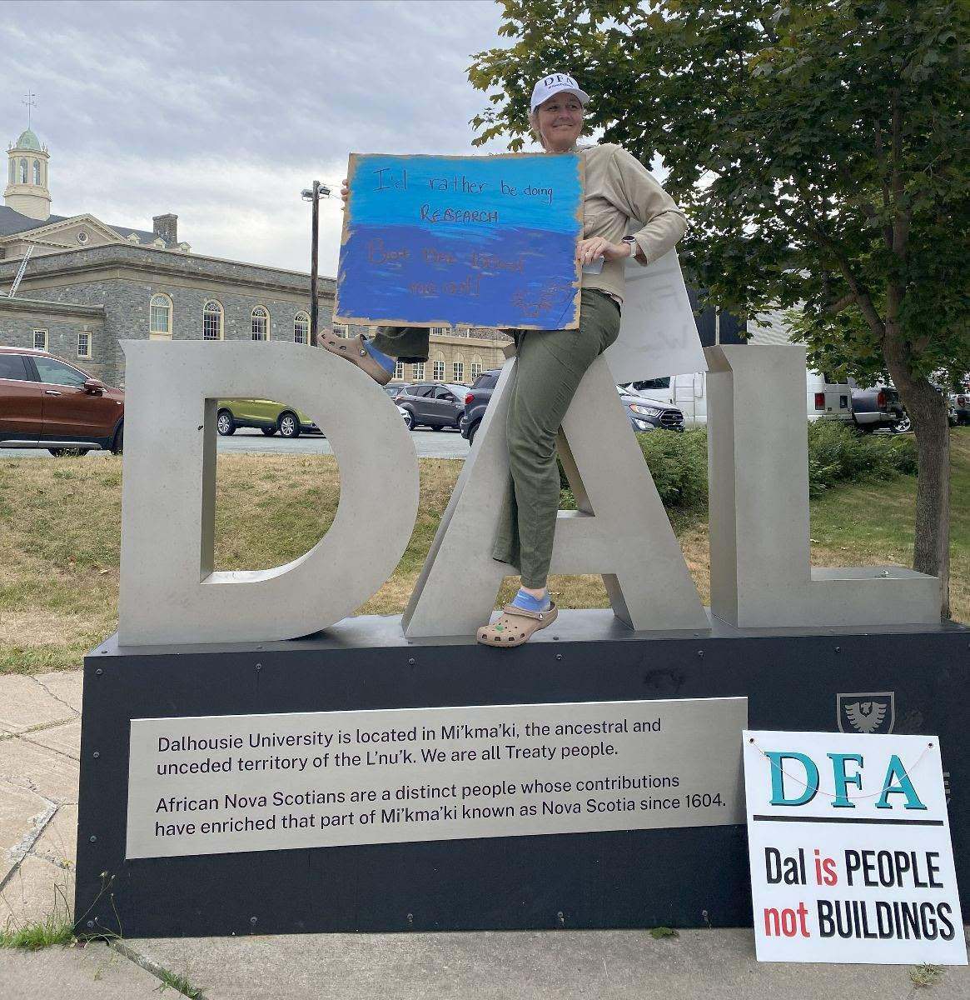
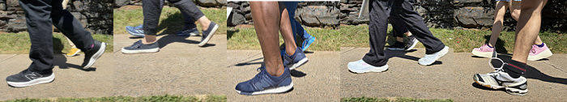
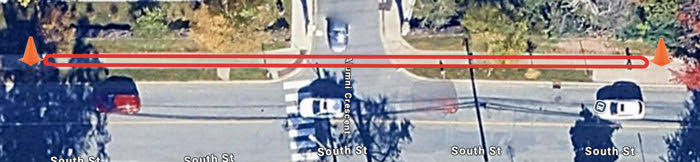

Daily Bulletin, September 5
Have an idea for something to cover?


President’s Response
For those of you who have not seen President Dave Westwood’s response to the latest misleading missive from Grace Jefferies-Aldridge, VP People and Culture, it is linked here (pdf) and posted below. [Ed. note: I’m honestly too frustrated by senior admin actions–or utter lack thereof, in President Kim Brooks’ case–to add any commentary].
Dear DFA Member,
Earlier this afternoon the Board released another inappropriate and misleading message to the campus community, almost identical in kind to the interest arbitration communication that led us to file a bargaining complaint with the Minister of Labour. The DFA Executive Committee will be asked tomorrow to approve adding this latest incident to the substance of our earlier complaint.
On September 2, Grace Aldridge-Jefferies, Dalhousie Vice-President of People and Culture, sent me a letter with what she characterized as an ‘offer’ – this is the ‘offer’ referred to in the campus-wide communication this afternoon. Ms. Aldridge-Jefferies is not a member of the Board’s bargaining team, and I am not a member of the DFA’s bargaining team. Communications of this kind violate the bargaining protocols jointly agreed by the DFA and Board. We called an urgent meeting of the DFA Bargaining Team, and also contacted our conciliation officer; all bargaining proposals are to be exchanged at the bargaining table with both parties present.
In the evening on September 3, our conciliation officer Rick Rose emailed the DFA and Board. The key recommendation from the email is extracted here:
“As a way forward, I am setting a meeting date to resume conciliation talks for Monday, September 8th, 2025 at 9:00 am. My office considered other dates - both earlier and later – but I feel this date will give us our best chance of having positive conversations and outcome.”
The DFA Bargaining Team met again this afternoon, and agreed that the only way to conclude a new collective agreement is at the bargaining table under the supervision of a conciliation officer. We can no longer trust the Board’s bargaining team to act in good faith. We trust Rick Rose’s judgement that the best time to meet is on Monday.
To be clear, we have accepted the invitation to conciliation on Monday, September 8, and we will not engage with any member of the Board until that time. The Board is free to introduce the ‘offer’ sent by Ms. Aldridge-Jefferies as a formal bargaining proposal following agreed protocol on Monday.
I appreciate that you are anxious to receive updates about progress in our negotiations, and ask for your trust that we are working in the best interest of all Members. We are dealing with an unprofessional and unpredictable bargaining partner trying to undermine the collective bargaining process to sow division and confusion. I encourage you to wait for communications from us before taking the Board’s messages about bargaining at face value.
It is your work on the line and elsewhere that brought us back to conciliation. Our efforts are having an impact, and we will go into the meeting Monday with the goal of reaching agreement.
I look forward to seeing you all at our rally tomorrow at noon.
Dave Westwood
DFA President 2025-2026
Reminder: on Friday, Sept 5th at 12:00 p.m., DFA members, CAUT flying pickets, other allies, community members, and students will be standing together outside the Killam Library to support precarious workers in our union! Please attend and tell your friends!
Note for 11:00 a.m. picketers: Picket Captains and their teams on the 11:00-1:00 shift should head towards the Killam with sufficient time to get there by 12:00. Please connect with your captains to assist bringing your materials to the rally. There will be stations with signs indicating different lines “Coburg,” “University,” etc. to bring the material to.
Note for 12:45 picketers: if possible, please come to the rally to pick up your material, and then walk to your shifts as the rally ends. We recognize the shift might start late.
Humans of Dalhousie: Dr. Andrew Brown (English) and Dr. LiLil Johnson (English and Gender and Women’s Studies)
We are both DFA faculty members in the English Department and we just had our first baby this March. In addition to many of the issues that have been discussed publicly, what is especially disappointing is the Board’s unwillingness to negotiate on non-monetary or relatively low-cost issues that would support DFA families like us. The Board outright rejected considerations such as expanding their parental leave provisions, offering space at the Dal daycare for children of faculty, or implementing policies that ensure that the classes we teach are scheduled at different times. They conveniently left out that their most recent offer included dropping these important issues.
This contract and being a faculty member at Dal is not just about money. (Though many of our faculty, especially junior and non-tenure stream faculty, are indeed underpaid compared to other universities across both Canada and the US.) We love doing our research, teaching, and service at Dal and chose to start our family here because of the supports for families for which the DFA has advocated. We encourage the Board to come to the table and continue to be a leader in supporting academics and their families!
Fun fact: We met through organizing for our graduate student union, Local 33!
Virtual Picket: Photo Request
Our virtual team asks that people share photos of picket lines and rallies by emailing them to picket.photos.dfa@gmail.com!
News from The Line
Colleague Steve Parcell sends us the following:
One of my fellow picketers from the first two weeks suggested that I send you this item for the daily bulletin. It’s one of the daily amusements I sent to the 11–1 South Street crew, led by rockstar Drew Weatherhead.


South Street crew
After seven days, here are some stats on walking.
Our loop is 150 metres:
Each day of picketing includes
30 loops per hour
2 hours per shift
25 persons
Our collective distance each day is:
- 150 x 30 x 2 x 25 = 225,000 metres = 225 kilometres
That’s the distance to Sackville, New Brunswick.
After seven days of picketing:
- our collective distance is 1575 kilometres
That’s the distance to Kingston.
Collectively, do we have a super power?
Distance: 1575 km
Time: 14 hours
Speed: 1575/14 = 112.5 km/hour
Usain Bolt’s top speed: 37.58 km/hour
Therefore, are we three times faster than Usain Bolt
(or would statisticians poke a hole in this calculation)?